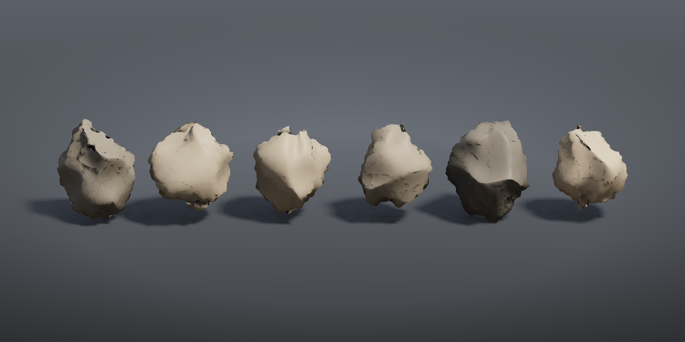

Tutorial 4: for-each variations#
Runs the same small modelling chain six times with a different random seed each pass and gathers the results: six different stones from one graph. The loop's iteration number is wired into the Seed inputs, which is how the larger example workflows build their rock libraries.

Load it#
Drag example_workflows/tutorial_04_foreach_variations.json onto the ComfyUI canvas and press Queue. No model files or other custom nodes are needed.
Step by step#
- Sphere (PCG) makes a coarse sphere (10 columns, 7 rows). It is the input of the loop.
- For-Each Begin (PCG) ("Each stone (count x 6)") is set to Iteration Method
By Countwith 6 iterations and MethodFetch Input, so every pass receives the whole, uncut sphere on itsgeooutput. Itsiterationoutput counts 0, 1, ... 5. - The loop body:
- Point Jitter (PCG) (scale 0.5) moves the points randomly. Its
rand_seedinput is connected toiteration, so the jitter differs per pass. - Subdivide (PCG) (depth 3) smooths the jittered sphere; Normal (PCG) (cusp angle 180) gives it smooth point normals.
- Attribute Noise (PCG) ("Pits along the normal") displaces the points along
Nwith a two-octave Worley F2-F1 noise (amplitude 0.12). Itsrand_seedis also wired toiteration. - Wrangle (PCG) ("Place and colour") receives
iterationon its Seed input too. Inside the code that value is the variableseed:@P.x += (seed - 2.5) * 2.3 @Cd = lerp(set(0.42, 0.40, 0.37), set(0.66, 0.60, 0.52), rand(seed + 0.5))Each stone is moved to its own slot along X and gets a colour between two greys.
- Point Jitter (PCG) (scale 0.5) moves the points randomly. Its
- For-Each End (PCG) (Gather
merge) is linked to the Begin node by theloopwire and merges the six results. - Geometry Preview (PCG) (1600 x 800, Studio look) and Viewport (PCG) show the row of stones.
Nodes between Begin and End (everything that depends on the Begin outputs) form the loop body. Nodes outside it, such as the Sphere, run once.
Worth tweaking#
| Node | Parameter | Effect |
|---|---|---|
| For-Each Begin | iterations | Number of stones. With more than 6, change the 2.5 in the Wrangle to (iterations - 1) / 2 to keep the row centred. |
| For-Each Begin | use_single_pass, single_pass | Run only one iteration, to inspect the body on a single stone. |
| Point Jitter | scale | How irregular the base shape is. |
| Pits along the normal | amplitude, element_size_*, noise_type | Size and depth of the surface pits. |
| Place and colour | code | Anything that should vary per stone: scale (@P *= 0.7 + 0.6 * rand(seed + 3)), colour, placement. |
To scatter the variations, give every stone an integer piece attribute (for example i@class = seed in the Wrangle) and use Copy to Points with Piece Attribute class, as the rock garden does.
See also#
- Loops and time: For-Each methods, gather modes and the iteration outputs.
- Expressions:
seed,rand()and the other Wrangle functions. - Rock assets pipeline: the same loop pattern producing game-ready assets.
- Next: Tutorial 5: COP texture.